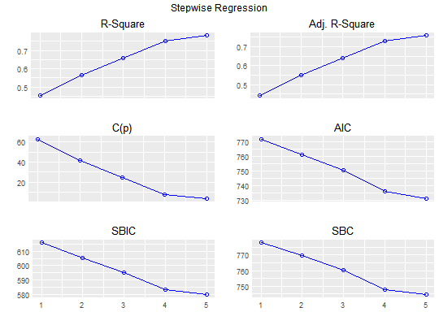

Build regression model from a set of candidate predictor variables by entering and removing predictors based on p values, in a stepwise manner until there is no variable left to enter or remove any more.
stepwise(model, ...)
lmstepwise returns an object of class "stepwise".
An object of class "stepwise" is a list containing the
following components:
# stepwise regression model <- lm(y ~ ., data = surgical) stepwise(model)#>#>#>#>#>#>#>#> Stepwise Selection Method #> #> Candidate Terms: #> #> 1 . bcs #> 2 . pindex #> 3 . enzyme_test #> 4 . liver_test #> 5 . age #> 6 . gender #> 7 . alc_mod #> 8 . alc_heavy #> #> ------------------------------------------------------------------------------------------ #> Stepwise Selection Summary #> ------------------------------------------------------------------------------------------ #> Added/ Adj. #> Step Variable Removed R-Square R-Square C(p) AIC RMSE #> ------------------------------------------------------------------------------------------ #> 1 liver_test addition 0.455 0.444 62.5119 771.8753 296.2992 #> 2 alc_heavy addition 0.567 0.550 41.3681 761.4394 266.6484 #> 3 enzyme_test addition 0.659 0.639 24.3379 750.5089 238.9145 #> 4 pindex addition 0.750 0.730 7.5373 735.7146 206.5835 #> 5 bcs addition 0.781 0.758 3.1925 730.6204 195.4544 #> ------------------------------------------------------------------------------------------# stepwise regression plot model <- lm(y ~ ., data = surgical) k <- stepwise(model)#>#>#>#>#>#>#>plot(k)